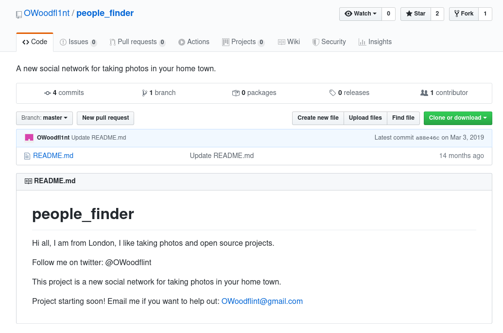
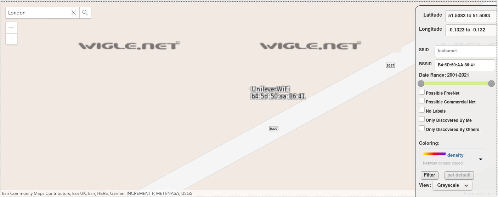
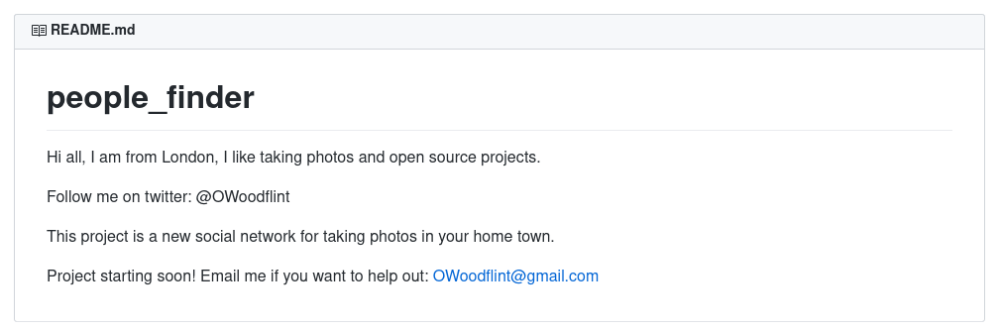
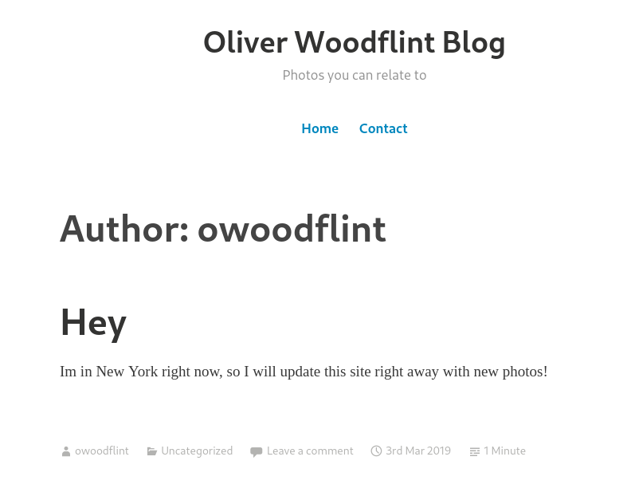

TryHackMe - OhSINT
Today we try the OhSINT room on tryhackme, https://tryhackme.com/room/ohsint to follow along!
Description
What information can you possible get starting with just one photo?

# 1 What is this users avatar of?
Awww, it’s that background from windows XP! What should we do with it.
Let’s do some recon on that image and checkout the metadata of the image first:
exiftool -a WindowsXP.jpg
ExifTool Version Number : 11.85
File Name : WindowsXP.jpg
Directory : .
File Size : 229 kB
File Modification Date/Time : 2020:04:13 09:45:08+02:00
File Access Date/Time : 2020:04:13 09:46:31+02:00
File Inode Change Date/Time : 2020:04:13 09:45:08+02:00
File Permissions : rw-r--r--
File Type : JPEG
File Type Extension : jpg
MIME Type : image/jpeg
XMP Toolkit : Image::ExifTool 11.27
GPS Latitude : 54 deg 17' 41.27" N
GPS Longitude : 2 deg 15' 1.33" W
Copyright : OWoodflint
Image Width : 1920
Image Height : 1080
Encoding Process : Baseline DCT, Huffman coding
Bits Per Sample : 8
Color Components : 3
Y Cb Cr Sub Sampling : YCbCr4:2:0 (2 2)
Image Size : 1920x1080
Megapixels : 2.1
GPS Latitude Ref : North
GPS Longitude Ref : West
GPS Position : 54 deg 17' 41.27" N, 2 deg 15' 1.33" W
$ md5sum WindowsXP.jpg
49e91584068dd192c849496cba8e2883 WindowsXP.jpg
The Copyright field gives us a name: OWoodflint. Digging for information we find lots of interesting stuff:
- his twitter account https://twitter.com/owoodflint
- his blog https://oliverwoodflint.wordpress.com/author/owoodflint/
- his github https://github.com/OWoodfl1nt/people_finder
And his twitter account has a cat avatar!

Flag: cat
#2 What city is this person in?
From the README.md file of his people_finder repository on https://github.com/OWoodfl1nt/people_finder

Bonus: we also get his personal email
Flag: London
#3 Whats the SSID of the WAP he connected to?
There is a tweet about that! https://twitter.com/OWoodflint/status/1102220421091463168. Apparently he likes to steal the WiFi of his neighbours :D
I thought Go nuts! might be the answer, but it’s totally not :D
Let’s try to check that BSSID on https://.wigle.net: filter on the BSSID: B4:5D:50:AA:86:41, hit the Filter button, then jump to London! There is exactly one match, which you’ll need to zoom a lot until you can see the SSID name: UnileverWiFi:

Flag: UnileverWiFi
#4 What is his personal email address?
The README.md of his people finder repository https://github.com/OWoodfl1nt/people_finder has the answer:

flag: OWoodflint@gmail.com
#5 What site did you find his email address on?
Well, we were just on it! It’s github!
flag: github
#6 Where has he gone on holiday?
Good thing he’s keeping us posted on his blog:

We also get to loot his full name: Oliver Woodflint
Flag: New York
#7 What is this persons password?
maybe his email was in a password leak? => nope, I checked the major breaches, nothing
maybe his password is stored in a gist? => nope, nothing on https://gist.github.com/OWoodfl1nt
List of handles/names I looked for: OWoodfl1nt, owoodflint, Oliver Woodflint, @OWoodflint.
This one was tricky. After tons of research and avoiding all the spoilers of the write-ups laying around, I still had nothing :((
And then I found the password by accident while copying stuff for the writeup :‘DD If you select the text of his only blog article, there’s actually a hidden line, because it’s white text on a white background:
Hey
Im in New York right now, so I will update this site right away with new photos!
pennYDr0pper.!
Source code of the article:
<article id="post-3" class="post-3 post type-post status-publish format-standard hentry category-uncategorised">
<header class="entry-header">
<h1 class="entry-title"><a href="https://oliverwoodflint.wordpress.com/2019/03/03/the-journey-begins/" rel="bookmark">Hey</a></h1> </header><!-- .entry-header -->
<div class="entry-content">
<p>Im in New York right now, so I will update this site right away with new photos!</p>
<p style="color:#ffffff;" class="has-text-color">pennYDr0pper.!</p>
</div><!-- .entry-content -->
And there we have our last flag: pennYDr0pper.!
That’s it gentlepeople! It was a short room but a good introduction to OSINT for beginners :3